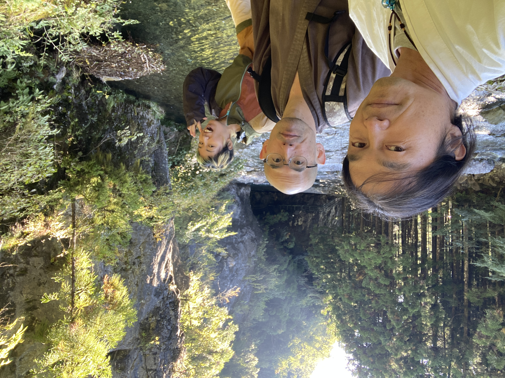
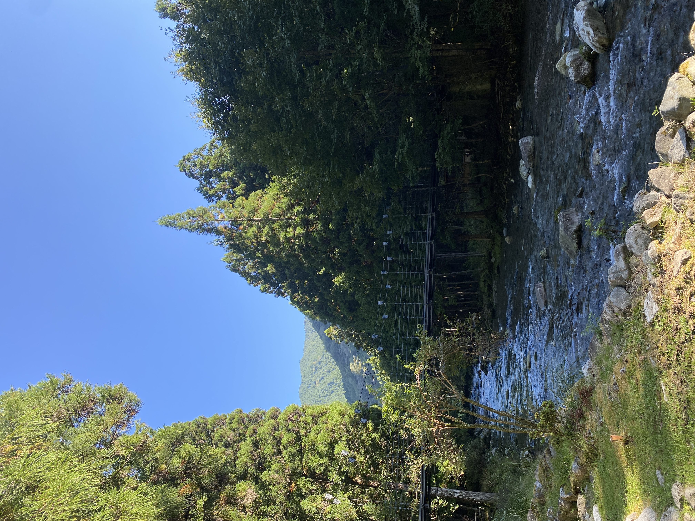
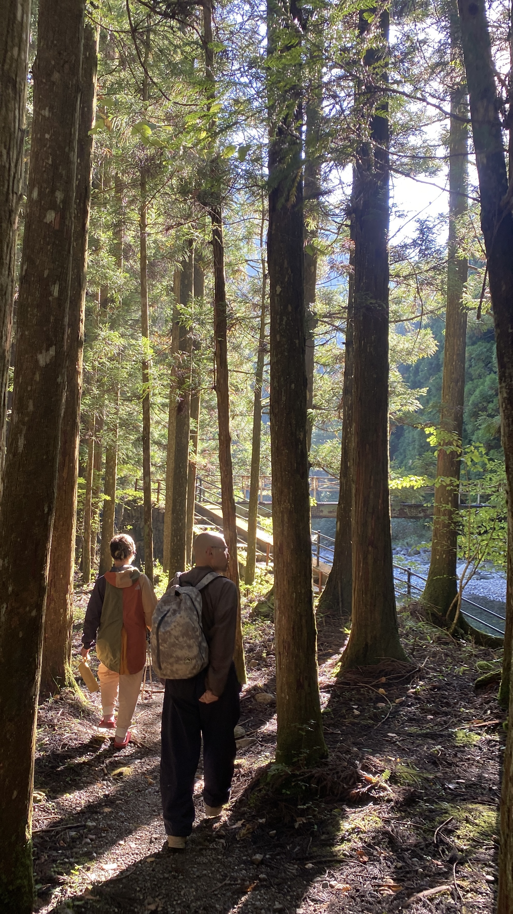

マインドから少し離れ、観測者の解像度を上げる。10月1日の天川村座禅会で、実際に起きた体験の記録です。
座禅をしながら、川の音を聞いていました。普段なら「川の音」と一つの言葉で聞いているものです。
けれど、よくよく聞いていると、一瞬前の音と今の音は同じではありません。川の広さも、流れも、水が石に触れる場所も違う。ありとあらゆる場所で生まれた音が重なり、私たちはそれを一括りにして「川の音」と呼んでいます。
2026年10月1日 / まずは説明を読まず、現地の音をそのまま聞いてみてください。
人生の中でも、私たちは細かな事実をそぎ落とし、「あの人」「自分」「この状況」と一つの言葉で世界を見ています。それが悪いのではありません。ただ、それが事実のすべてではなく、自分のマインドが作った一つの見え方だと気づけるかどうかです。
座禅のあと、望月ご住職が、ご自身の修行日記を読みながら気づきを分かち合ってくださいました。
呼吸を長くしようとする働きがある。同時に、その呼吸を静かに眺めている働きがある。それを、舞台で演じている演者と、客席から静かに観ている観客のようだと表現されました。
今回、前田薫が置いていた「マインドから少し離れて観測者になる」というテーマと、ご住職が長い修行の中で観察されてきたことが重なりました。

座禅は、何も考えない人になるためでも、感情が動かない人になるためでもありません。
これを知識だけで理解したことにせず、身体で何度も経験していく。今回の川の音は、その入口になりました。


できることが増え、AIが多くの工程を担える時代になるほど、「何のために」「誰のために」「なぜこれをするのか」という源が大切になります。
座禅とAIは、一見すると正反対に見えます。けれど、自分の使命や長期的なビジョンが明確であれば、どちらも自分の人生を本来の方向へ進める力になります。
この座禅会は、特別な答えを誰かから受け取る場所ではなく、自分自身を観る力を、場と仲間とご住職の伴走の中で育てていく場所です。
あの日の静けさを思い出したいとき、
またここへ戻ってきてください。